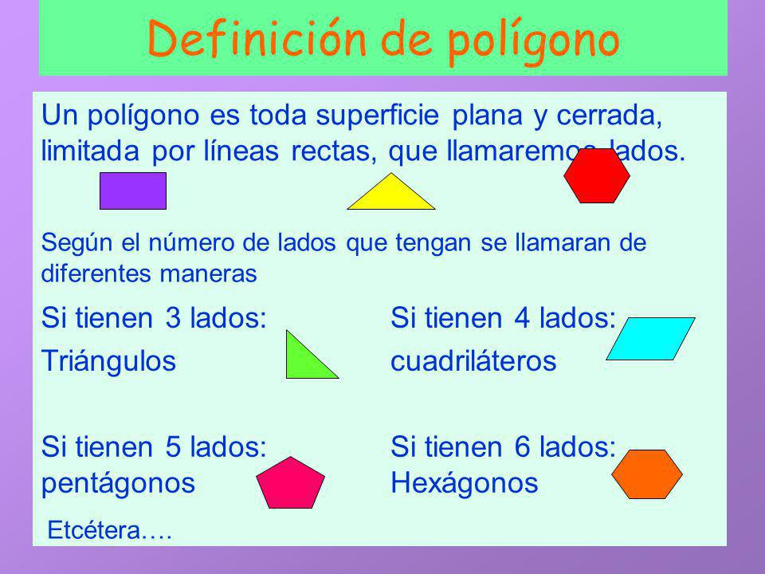

Geometría plana: figuras geométricas y sus propiedades
Competencia: Reconoce, describe y clasifica figuras geométricas planas (triángulos, cuadriláteros, círculos) y sus propiedades (ángulos, lados, simetría) en diferentes contextos.

¡Hola! Soy Cosmo, continúa esta aventura interactiva de
aprendizaje desde la geometría. Comencemos explorando el fascinante mundo de los polígonos y las figuras planas.

Imagina que estás construyendo una casa de muñecas utilizando piezas de cartón recortadas en formas simples. Aquí está lo que necesitas hacer:
- Base de la casa: Utiliza un cuadrado como base de la casa de muñecas.
- Paredes: Recorta cuatro rectángulos para representar las paredes de la casa.
- Techo: Recorta un triángulo equilátero para representar el techo de la casa.
- Puerta y ventanas: Utiliza formas más pequeñas, como rectángulos y cuadrados, para representar la puerta y las ventanas de la casa.
Todas esas formas que estas utilizando, son polígonos, pero...¿Qué es un polígono? En geometría, un polígono es una figura geométrica plana compuesta por una secuencia finita de segmentos rectos consecutivos que encierran una región en el plano. Estos segmentos son llamados lados, y los puntos en que se intersecan se llaman vértices. En el siguiente video, tendrás una explicación mas detallada de que se define como polígono:
Ahora bien, existen una gran cantidad de polígonos regulares (aquellos que tienen todos sus lados iguales) e irregulares (con lados diferentes), Algunos polígonos son los tríangulos, los cuadriláteros, y aquellos que tienen mas de cuatro lados, conocidos generalmente com oplígonos de n lados. ¡vamos a practicar! De los siguientes juegos y simuladores interactivos, selecciona el que más te guste y disfruta de la experiencia.
¡Vamos practicar un poco sobre polígonos! A continuación, observa lee la información sobre com oidentificar polígonos en mosaicos y Trata de dibujarlos, según la instrucción de cantidad de puntos que se requieren. Esta actividad, te ayudará a practicar los polígonos con lados iguales y cuál es su nombre.
-
Este es un simulador interactivo que te ayudará, desde la práctica, a interiorizar mejor loos tipos de polígonos que existen.
Ahora bien, dentro de los polígonos, existe un espacio al que llamamos área. En otras palabras, es la superficie que ocupan los polígonos u otras figuras planas. En el siguiente ejemplo, analizamos el espacio interior que ocupa una cancha de futbol, teniendo en cuenta la base y la altura de esta cancha, o la medida de sus lados:

Para hallar el área de un polígo, en especial los cuadrilateros como los rectángulos y los cuadrados, debemos tener en cuenta las medidas de su base y se su altura, para luego encontrarla a partir del producto de ambas medidas. Ahora bien, En el caso de los triángulos, estos son la mitad de un cuadrado o rectángulo, dividiéndola desde sus diagonales como se muestra en la siguiente imagen:

Como vemos en la imagen, al pasar un segmento de recta por las diagonales de un rectángulo, se forman dos triángulos.
Para hallar el área de un triángulo, también tenemos en cuenta el producto de la base y la altura, pero dividida entre dos.
.jpg) Ahora bien, ¿Cómo hallamos el área de figuras de más de cuatro lados? Para ello, tenemos las siguientes alternativas:
Ahora bien, ¿Cómo hallamos el área de figuras de más de cuatro lados? Para ello, tenemos las siguientes alternativas:
- Podemos dividir el polígono en triángulos, teniendo en cuenta la medida de la base y la altura de cada uno, y luego sumar todas las áreas de los triángulos,
como se muestra en la siguiente imagen:
 Es importante tener en cuenta que, en este caso, las alturas de in triángulo dentro de un polígono, se llaman apotemas. Un apotema, es el segmento perpendicular entre el
centro de un polígono regular y uno cualquiera de sus lados.
Es importante tener en cuenta que, en este caso, las alturas de in triángulo dentro de un polígono, se llaman apotemas. Un apotema, es el segmento perpendicular entre el
centro de un polígono regular y uno cualquiera de sus lados. - Otra opción es hallar el perímetro del polígono (un perímetro es la suma de todos los lados de un polígono).
- Puerta y ventanas: Utiliza formas más pequeñas, como rectángulos y cuadrados, para representar la puerta y las ventanas de la casa.
> Para hallar el área de un polígono, en especial los cuadriláteros como los rectángulos y los cuadrados, debemos tener en cuenta las medidas de su base y su altura, para luego encontrarla a partir del producto de ambas medidas. Ahora bien, en el caso de los triángulos, estos son la mitad de un cuadrado o rectángulo, dividiéndola desde sus diagonales como se muestra en la siguiente imagen: